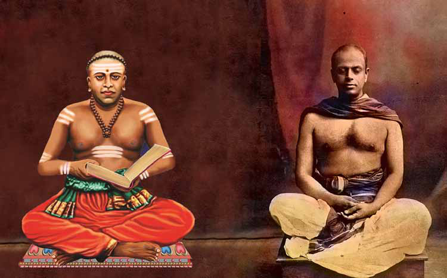
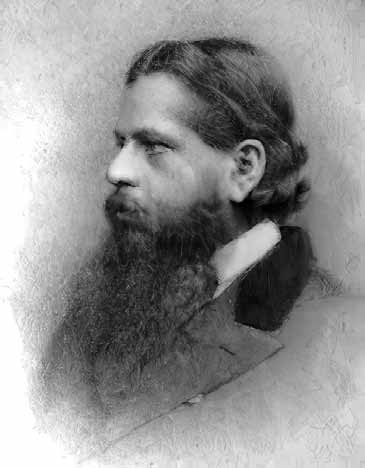
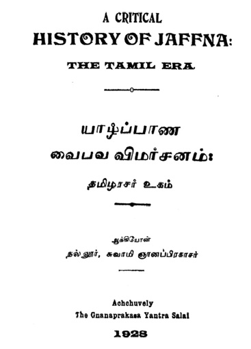
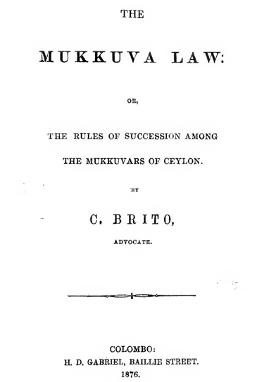
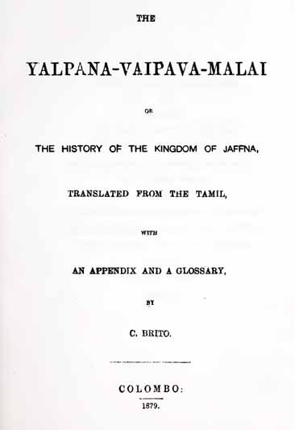
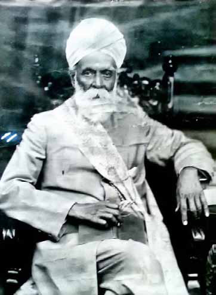
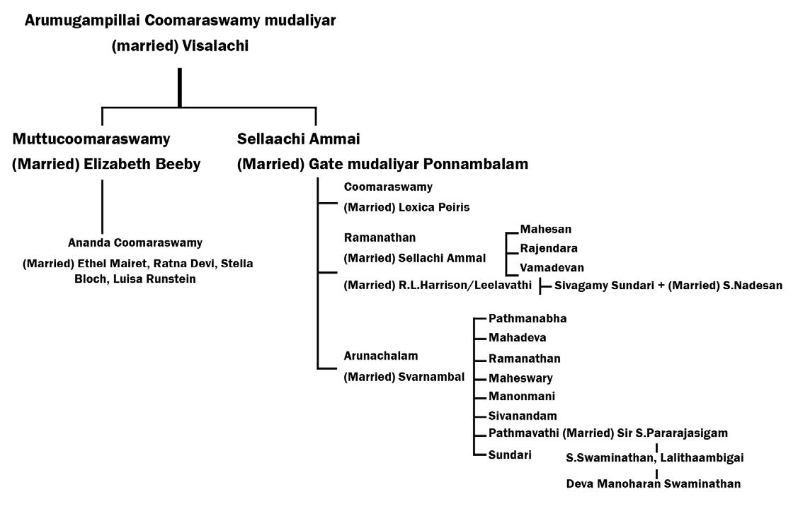
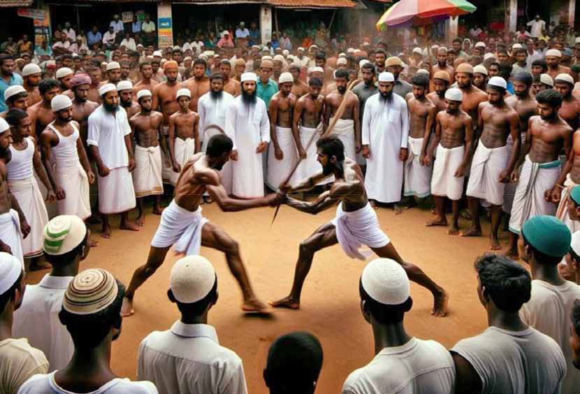
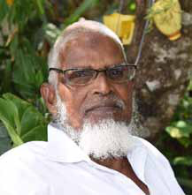

The story of how Navalar brought Ramanathan into politics
The story of how Navalar brought Ramanathan into politics
Jaffna Monitor hellojaffnamonitor@gmail.com 57 T he year 1879 is filled with significant historical events, especially in Tamil history. In the three preceding years, a cholera epidemic engulfed Jaffna, resulting in the deaths of approximately 7,000 people. As a result of the anti-cholera relief efforts, many prominent Tamils united regardless of caste or religion. By 1879, the cholera epidemic had ended, and the situation returned to normal. This year marks the death of Arumuka Navalar and Sir Muthucoomaraswamy. It was also the year Sir Ponnambalam Ramanathan The story of how Navalar brought Ramanathan into politics By: Sarawanan Komathi Nadarasa Arumuka Navalar
Sir Ponnambalam Ramanathan


Jaffna Monitor hellojaffnamonitor@gmail.com 58 entered politics. Ramanathan, who was raised under the care of his maternal uncle, Sir Muthucoomaraswamy, began his political career during this significant year. On May 4, 1879, Sir Muthucoomaraswamy passed away. From 1862 until his death, he served as a member of the Legislative Council. His death created a vacancy in the Legislative Council. In the contest for his vacant seat, the Catholic candidate Christopher Britto received the support of Thirumeniar Venkatasamlapillai, the great- grandfather of LTTE supremo Prabhakaran. Venkatasalampillai believed that appointing Britto, a Catholic known for his long experience in public service, his prominence as a social worker, district judge, and Queen's Counsel, through the Governor's nomination would avoid religious discrimination among Sri Lankan Tamils and promote unity and service among the people. However, in that contest, due to the intense campaigning by Arumuka Navalar, who promoted the slogan "Saiva Vellalar," Ponnambalam Ramanathan, a high-caste Vellalar, was appointed to the position by the Governor. Navalar completed this task and passed away a few months later, on December 5, 1879. In reality, Ramanathan was not well-known in the North at that time. Coomaraswamy's family was based in Colombo, and Britto was more well-known than Ramanathan. The political contest between Britto and Ramanathan is very significant in history. Even today, whenever Ramanathan's entry into politics is mentioned, it is often summarized as "Navalar brought him into politics." However, we need to view this historical event as part of the Jaffna-Saiva-Vellalar dynamic that was occurring behind the scenes. Christopher Brito Christopher Brito's father, Philip Brito, was from Puttalam and was known as a prominent Mudaliyar and a government registrar. Brito received his education at Colombo Academy, which is known today as Royal College. He was the first Sri Lankan to graduate from the University of Calcutta. Subsequently, he served as a professor at Agra University. Upon returning to Sri Lanka, he worked as a professor of mathematics at Colombo Academy, where he had studied. In 1867, he began practicing as a barrister in the Supreme Court and later served as a judge in the districts of Batticaloa, Jaffna, and Colombo. Brito was a well-known figure, influential as a Queen's Counsel. From January to December 1872, he was a member of the Colombo Municipal Council.1 He also served as the president of the Bar Association.2 Brito was proficient in Tamil, Sinhala, English, Latin, Greek, Sanskrit, and Pali. He also served as the president of the Catholic Union of Ceylon.3 According to the Ferguson Directory (1905-1906), he was a plantation owner as well.4 1 DICTIONARY OF BIOGRAPHY of the Tamils of Ceylon Compiled by S.Arumugam, 1997 2 CENTENARY VOLUME of the Colombo Municipal Council 1865-1965 - By H. A. J. HULUGALLE - Pub- lished by the Colombo Municipal Council (september 1965) 3 Ferguson's Ceylon Directory 1905-1906 (P.868) 4 These property details are found in the details of the case in which the property given by the father-in-law Nannithambi later went up to the case of the chil- dren's property dispute. (BRITO v. MUTHUNAYAG- AM. 331—D. C. Negombo, 9,946. http://www.lawnet. gov.lk/wp-content/uploads/2016/11/006-NLR-NLR-V- 19-BRITO-v.-MUTHUNAYAGAM.pdf
Jaffna Monitor hellojaffnamonitor@gmail.com 59 Christopher Brito's Contribution to Tamil Cultural Studies While the Mahavamsa is celebrated by the Sinhalese as the history of Sri Lanka, it can be said to be the history of the Sinhalese Buddhists. Similarly, the works that are still used today to understand the history of the Jaffna Tamils include "Kailaya Malai," "Vaiya Padal," "Pararajasekaran Ula," "Raja Murai," and "Yalpana Vaipava Malai." Of these, the "Yalpana Vaipava Malai" was first written in 17365 by Mayilvaganapulavar at the request by the Dutch Governorship of Jan Maccara. However, it was first printed only in 1884.6 Based on this book, in 1928, Swami Gnanapragasar published a work titled "Yalpana Vaipava Vimarsanam – Tamilarasar Uham." In his publication, he addresses the inconsistencies he found in the "Yalpana Vaipava Malai."7 His important critical essay, "Sources of the Yalpana Vaipava Malai," was 5 Later, the " yalpana Vaibhava Malai" went to the British Library and copied it and it was published by Mudaliar Kula Sabanathan to re-publish it. Although Brito's book mentions that the original work was published by Mayilvahana Pulavar in 1736, Kula Sa- panathan's book "Yaazhpaana Vaibhava Maalai" may have been written about 50 years before that, espe- cially examining the discrepancies in the information about the life of the Mayilvahana poet and examining the discrepancies in the information about the life of the Mayilvagana pulavar from the middle of the 18th century to the 19th centuryIt is logically argued that it must have existed until the beginning of the th cen- tury. (Mudaliar Kula Sabanathan - YalpanaVaibhava Malai - "Eelakesari" edited by Mr.N.Ponniah, Principal - 1949) 6 "Yalpana Vaibhava Maalai" by Mathagal Mayilvahana Pulavar – Research Notes by Mudaliar Kula Saba- nathan - Department of Hindu Religious and Cultural Affairs - 1995 7 Gnanaprakasar and Swami - Yalpana Vaibhava Review - Achchuvely - The Gnanaprakasa Yantra salai - 1928 published in English under the title "Revd. S. Gnana Prakasar - Sources of the Yalpana Vaipava Malai'.8 One and a half centuries after the original book was written, Brito first translated it from Tamil to English. This translation was published in 1879. Interestingly, this means that the "Yalpana Vaipava Malai" was available in English even before it was printed in Tamil.9 Today, Brito's English translation remains an essential document for studying the history of Jaffna. It is not merely a translation but includes many annotations, footnotes, and explanations, showcasing Brito's research expertise. When exploring Brito's background, it is evident that he had a deep and inquisitive 8 Ceylon Antiquary And Literary Register Vol.6 (1920- 1921) by Office Of The Times Of Ceylon - 1920 9 C. BRITO - The Yalpana-vaipava-malai, or, The History of the Kingdom of Jaffna - Translated from the Tamil with an appendix and a glossary - - Asian educational services New Delhi - Madras - 1999. (Frist Published: Colombo, 1879) Sir Muthu Coomaraswamy

Jaffna Monitor hellojaffnamonitor@gmail.com 60 knowledge of history. This is particularly apparent in the records of the Ceylon Branch of the Royal Asiatic Society, where he made numerous contributions to history, literature, and politics. For this translation, he compared many other historical texts. During his research, he noted that "the book contains individuals, events, and times in a confusing manner." 10Additionally, it seems that regional and caste superiority sentiments are interwoven in his liberal-minded translation, particularly evident in the way he describes the "Boothathampi" matter, as observed by John H. Martyn.11 John Martyn has extensively analyzed the various complexities in both the compilation of the "Yalpana Vaipava Malai" and Brito's translation in his book. John Martyn mentions that the second edition of the "Yalpana Vaipava Malai" was published in 1882 by Reverend S. John of the American Mission in Jaffna. However, the book he published was actually titled "Yalpana Chariththiram or the History of Jaffna – S. John." This book was based on the "Yalpana Vaipava Malai" but included some modifications. Notably, there are differences in the accounts of Kailaya Vanniyan and his cousin Boothathampi traveling to Colombo and the events that took place there. In another instance, Martyn clarifies that Brito did not write a separate "History of Jaffna." Instead, Brito translated the "Yalpana Vaipava Malai" and added some annotations. Martyn emphasizes that if Brito had indeed written a separate historical work, he would not have titled it "History of Jaffna." 10 Ibid - xxxiv 11 Martyn's Notes on Jaffna: Chronological, Histori- cal, Biographical - John H.Martyn - Asian Educational Services, New Delhi, India - 1923 Another historically significant book translated by Brito is the "Mukkuvar Law," published in 1876, even before the "Yalpana Vaipava Malai." Brito undertook this translation while serving as Batticaloa's district judge, recognizing this work's importance. A reference indicates that he delivered a lecture titled "The Political Situation of Ceylon a Hundred Years Ago," which was later published as an article. However, the location or the text of this article remains unknown.12 Brito's deep involvement in scholarly activities is evident from his membership in the Royal Asiatic Society – Ceylon Branch (e.g., the 1865 membership list) and his collaboration on various research projects with several English scholars, including H.C.P. Bell. Alongside the renowned archaeologist H.C.P. Bell, Brito submitted a research paper titled "The Tamilian Problem." It is noted that only after Brito did figures such as Ramanathan and Arunachalam begin to take part in the Royal Asiatic Society. Later, Brito, Ramanathan, and Arunachalam were active members simultaneously, participating in meetings and making significant decisions together. In a meeting held at the Colombo Museum on May 16, 1895, Ponnambalam Coomaraswamy chaired the session. In the same meeting, Ponnambalam Ramanathan expressed his views on a discussion about "Purananuru," while Brito discussed obtaining documents for debates on "Silappathikaram" and King Gajaba's Indian expedition.13 Additionally, Brito published a book titled "Life of Pope Pius IX – Jaffna" in 1892, as noted in the British Library's catalog of Tamil 12 “BOOKS ON CEYLON” - Ceylon Antiquary And Literary Register Vol.6 (1921-1922) by Office Of The Times Of Ceylon – 1921 (p.48) 13 JOURNAL, R.A.S. (CEYLON). [VOL. XIV. - 1897
Jaffna Monitor hellojaffnamonitor@gmail.com 61 books.14 The role of prominent Tamil Christian scholars of that era, such as Kasi Chetty, Henry Martyn, John, Daniel Samuel, and Christopher Brito, in rediscovering and disseminating the history of Jaffna cannot be overlooked. While their contributions may not have received due recognition within the Tamil community, they are highly acknowledged outside of it. Brito's contribution to Tamil cultural studies should be viewed in this broader context. Kasi Chetty, Brito, and Muthukrishna were known as "Colombo Chetties"15 and, as noted by Patrick Peebles, they were Protestant migrants from South India.16 However, Peebles' book creates potential confusion by mentioning Christopher Brito, who translated the "Yalpana Vaipava Malai," in one paragraph and then discussing these Colombo Chetties in the next, implying that the two Britos might be the same person. At the same time, there was another individual named Philip R. Britto Babapulle, a well- known physician and relative of Kasi Chetty, who also wrote books. There is even a street named "Dr Britto Babapulle Place" in Colombo's Grandpass area in his honor. He too came from a Chetty background. 14 A catalogue of the Tamil books in the library of the British museum, compiled by L. D. Barnett - 1909 15 We can see that the Chetties functioned as a sepa- rate caste in Sri Lanka. There are ample references to the existence of a dominant caste on a par with the Vellalars. The petition, dated 02.09.1830 dated Mariarasa of Jaffna, referred to the Supreme Court the evidence of the application filed by the Vellala Chetti caste against the permission of the Scheduled Castes to wear thodus (Vellala Caste and Chetty Caste against permitting the Low caste to wear ear rings) PRIMARY SOURCES FOR HISTORY OF THE SRI LANKAN TAMILS WORLD-WI DE SEARCH COMPILED BY DR. MURUGAN Gunasingam. 16 THE HISTORY OF SRI LANKA -Patrick Peebles - Greenwood Press - London (2006) Historians such as K.M. de Silva and Howard Wriggins have recorded that even the maternal ancestors of J.R. Jayawardene belonged to the Colombo Chetty community.17 During the burning of the Jaffna Library by the United National Party government in 1981, the only surviving original copy of the "Yalpana Vaipava Malai" was destroyed, resulting in an irreplaceable loss. The influence of the Mahavamsa's prestige should also be noted in the context of translating the "Yalpana Vaipava Malai" into English. Challenge to the Mahavamsa We know that scholarly research and intellectual endeavors in Sri Lanka were largely 17 People of Sri Lanka, “Sri Lankan” - Our Identity “Diversity” - Our Strength, Ministry of National Coex- istence, Dialogue and Official Languages - 2017

Jaffna Monitor hellojaffnamonitor@gmail.com 62 conducted by colonialists during the colonial period. Their role in recovering our history was significant. The Mahavamsa, which had been recognized as the history of Sri Lanka until then, was written in the 6th century. Historians have pointed out that it was authored in Pali by Mahānāma Thera and primarily depicted the history of the Sinhalese Buddhists. For centuries, those who attempted to study Sri Lankan history had no access to it in languages other than Pali. Efforts to translate it in the 19th century were not entirely successful. The first complete English translation was done by George Turnour, who was in the civil service in Sri Lanka, and it was published in 1837. However, it was criticized for its inaccuracies and incompleteness. In this context, Brito brought out the English translation of the "Yalpana Vaipava Malai" in 1879. In a way, this served to challenge the Mahavamsa's narrative, which attempted to establish Sri Lankan history as predominantly Sinhalese. The translation highlighted details about Tamil kingdoms and Tamil kings in the North. The necessity of translating the Mahavamsa into English was then recognized not only by the Sinhalese but also by the English. About 75 years after the flawed translation by George Turnour, Wilhelm Geiger published a German version. It was later translated back into English under the supervision of Mabel Haynes Bode, an expert in Pali, and was published in 1912. Navalar's Choice: Ramanathan At that time, Navalar was in conflict not only with Catholics but also with many Saivites. Christopher Brito, a Catholic, had considerable influence within the Catholic community. Newspapers like "The Guardian" and "Ilankai nesan" supported Brito. "Udayabanu," another newspaper, was established later. Brito was wealthy, owning land in Kalpitiya, Chilaw, Madampe, and Negombo. During the cholera outbreak in Jaffna between 1878-1879, which claimed many lives, he collaborated with Arumuka Navalar in relief efforts. Navalar set up a porridge distribution project, collecting funds from many notable figures and providing porridge for several days. Navalar initially donated 20 rupees to start the fund. The daily expenses were around 22 to 25 rupees. Brito contributed 45 rupees to the project and personally visited the distribution sites every afternoon at 4 PM to collect details. Brito, along with local residents, Jaffna Government Agent W.C. Twynam, District Judge D. Saram, and Provincial Assistant C. Prime, established the Porridge Distribution Charity Society on August 2, 1877. Brito was appointed chairman, with Sesh Alagakone, Arumuka Navalar, Arunachalam Mudaliar, Sinnathambi, and Thambu as members. Twynam, Saram, and Prime served as advisors.18 Brito's contribution to creating a relief fund for the poor was appreciated by Twynam.19 In 1879, Brito also served as a member of the Colombo Municipal Council. Despite working with Brito, Navalar remained dissatisfied with him. The primary reason for this dissatisfaction was related to the Nallur Kandaswamy Temple case. In 1876, a 18 S. Dhananjayarajasingam "Navalar Works" (Tamil) - Colombo Tamil Sangam 2011 19 Founders of Modern Ceylon (Sri Lanka) EMI- NENT TAMILS - Vol I. Parts I & II - UMA SIVA PATHIPPAKAM - 1973
Jaffna Monitor hellojaffnamonitor@gmail.com 63 dispute between the temple's Brahmins and its administration escalated to a court case. Brito represented the administration as their lawyer, while Navalar supported the Brahmins. When Navalar entered the courtroom, Brito and other lawyers stood up to show respect. However, Navalar's resentment towards Brito stemmed from Brito's role as the opposing counsel in the case.20 Brito was a highly influential, educated, socially active, and politically experienced elder. However, Navalar brought the relatively unqualified Ramanathan into politics primarily because Ramanathan was a Saivite. Navalar could not tolerate the influence Brito, a Christian, had at the time. On May 15, 1879, the Jaffna Bar Association held a meeting where lawyers gathered to collect signatures in support of Brito. Senior lawyers who supported Ramanathan did not attend this meeting, and Navalar's faction accused the Jaffna Bar Association of showing support for Brito. In response, Navalar held a public meeting on May 22, 1879, at the Saiva Prakasa Vidyalaya in Vannarponnai. Nearly 3,500 people attended, marking the start of the campaign in support of Ramanathan. An article about this meeting appeared in the "Colombo Observer" newspaper on May 29, 1879. At this time, the "Colombo Observer" supported Ramanathan, while "The Examiner" supported Brito.21 Navalar's animosity towards "The Examiner" is evident in his writings, particularly in his book "Yalpanam Samaya Nilai," where he criticizes the newspaper's ongoing campaign against Saivites. 20 Ibid - p-36 21 The life of Sir Ponnambalam Ramanathan – by M. Vythilingam, B. A. – Vol -1 – 1971. The meeting was chaired by Carol Viswanathapillai of Suthumalai, the first graduate of the University of Madras. In his speech, he expressed sorrow over the loss of Sir Muthucoomaraswamy and proposed Ramanathan, a relative and a lawyer from Colombo, for the vacant position. He also highlighted the greatness of Ramanathan's family background.22 This was seconded by D. Ponnambalam Pillai, who was a judge in Thanjavur. Everyone present accepted his statements unanimously. Navalar, who was suffering from asthma and 22 He was the first Asian to receive a “Sir”. His father, Arumugampillai Coomaraswamy, was the first non- official Tamil representative in the First Legislative Council from 30 May 1835 to 1836. Arumugam Pillai acted as an interpreter for the British during the con- quest and treaty of Kandy. Governor Robert Brownrigg has also gifted him a gold ring.

Jaffna Monitor hellojaffnamonitor@gmail.com 64 observing from a corner, suddenly became emotional and loudly instructed his assistant to bring his letters, documents, and cables. Following this, Arumuga Navalar gave a speech, discussing Ponnambalam's family background and his contributions to the legal field. He stated, "After being elected to the Legislative Council, Sir Coomaraswamy did not return to Jaffna due to his work. Why shouldn't Ramanathan do the same? He is qualified for it." Many prominent figures then spoke in support of Ramanathan, including S. Thillaiyampalam (Udayar of Sandilipay), Kandhar Kasippillai (a merchant), S. D. Sivapragasam Pillai, E. Mayilvaganam, and S. Thurayappa Chettiar. At the meeting, many signed in support of Ramanathan. It was decided that the next campaign meetings would be held on the 24th in Chankanai and on the 27th in Nallur. Meetings from both sides took place in various locations. During this period, there were no widespread elections or centralized voting. Instead, intellectuals and dignitaries would gather to express their opinions to the government. Ultimately, Ramanathan was successful. On August 27, 1879, at the age of 27, Ramanathan was appointed to the Legislative Council by the then-Governor, James Robert Longden. Upon Ramanathan's appointment, Brito sent his complaint to the colonial secretary. In his letter dated June 18, 1879, Brito requested the cancellation of Ramanathan's appointment and urged respect for the people's decision. He detailed the nationwide meetings he had held and the support he had garnered, emphasizing that he had the backing of a majority of Tamils, Muslims, and Malays. However, the Governor declared Ramanathan's selection to be appropriate, and this response was communicated to Brito and his supporters.23 23 Founders of Modern Ceylon (Sri Lanka) EMI- In the book "Founders of Modern Ceylon" by V. Muthucoomaraswamy, there is a comprehensive essay about Sir Ponnambalam Ramanathan. This essay includes various reports, newspaper articles, and meeting notes detailing the controversies surrounding Ramanathan's entry into politics. However, it appears that the book selectively compiles information favorable to Ramanathan while omitting details from Brito's side, which anyone can notice as a biased representation. One particularly interesting section of the book mentions a statement published on May 15, 1879, in The Observer newspaper by the Nattukottai Chettiar community, supporting Ramanathan. The statement explains that the Nattukottai Chettiars held a meeting, collected signatures, and supported Ramanathan's appointment to Muthucoomaraswamy's position, highlighting his origins, Coomaraswamy's contributions, and their family's heritage. The irony here is noteworthy. In 1836, the Tamil representative in the Ceylon Legislative Council was Mudaliyar Arumugampillai Coomaraswamy, the first Tamil-Muslim representative. In 1830, Coomaraswamy was elected as the leader of the "non-Christian Tamils" in Colombo, an election held at the Upper Province Kachcheri. Coomaraswamy's competitor was Tyagappa, a prominent figure in the alcohol production industry and a member of the Chettiar community. This election was essentially a peaceful conflict between the Saiva Vellalars and the Saiva Chettiars. There was a longstanding rivalry between the Chettiars and the Vellalars in Colombo. However, later on, the same Chettiar community fought NENT TAMILS - Vol I. Parts I & II - UMA SIVA PATHIPPAKAM - 1973
Jaffna Monitor hellojaffnamonitor@gmail.com 65 for the appointment of Sir Ponnambalam Ramanathan, a Saiva Vellalar descendant of Mudaliyar Arumugampillai Coomaraswamy. Ganapathy Pillai's Account Half a century after Sir Ponnambalam Ramanathan's appointment, an article was published in the "Eelakesari" on Navalar Memorial Day (December 15, 1946) that discussed this event. This article inspired me to write this piece. The article was authored by "C.K.," which likely refers to Pandithamani C. Ganapathy Pillai. C. Ganapathy Pillai wrote another version of this incident in an essay titled "Nalavar Ezhunthar" in the 10th annual Tamil literary textbook of Sri Lanka. He mentions: "Sir Ponnambalam Ramanathan was 25 years old at the time. He had a smiling face and a golden complexion. He had just returned from studying in Madras. Although he was from Jaffna, the people of Jaffna knew nothing about him. He had recently arrived in Jaffna. Brito was a famous and experienced lawyer. He was considered one of the top legal experts of the time. Everyone in Sri Lanka knew him. He had a significant reputation in both Colombo and Jaffna. It was customary to appoint him for major cases and appeals. He wielded considerable influence in Jaffna during those days..." The article continues and, at one point, mentions the reason for the animosity between Navalar and Brito. During the Nallur Kandaswamy Temple case, Navalar supported the Brahmins, while Brito argued on behalf of the temple administration. Brito reportedly suggested to Navalar's associates that he could ensure the Brahmins' victory in exchange for Navalar's support in his own cases. Navalar viewed Brito's actions as lacking integrity and opposed him on these grounds. C. Ganapathy Pillai presents this as a conjecture, using phrases like "it seems" to indicate that Brito may have mentioned this in some of his letters or cables. He writes: "In the same letter, 'Navalar Ezhunthar,' he concludes with, 'One note: Those who told me this story a thousand times were eyewitnesses to the meeting and were involved with it. They included Navalar's nephew's son, those who wrote their history, and my teachers...'" We must recognize that the Tamil-Saiva- Vellalar tradition, represented by Navalar, had the privilege of recording history. Therefore, it is essential to consider the possibility of bias in the accounts recorded by those who have written about these events.

Jaffna Monitor hellojaffnamonitor@gmail.com 66 Ramanathan and Brito as Relatives Ramanathan and Brito were actually relatives, having married daughters of E. Nannithamby, a wealthy man from Manipay. Ponnambalam Ramanathan married Sellachi Ammal in 1874, and Brito married her sister Thangamma in 1866. This made Ramanathan and Brito closely related. Brito's son, C.M. Brito, later became a renowned Supreme Court lawyer, mentored by Sir Ponnambalam Ramanathan.24 Thirumeniyar Venkatasalapillai of Valvettithurai, who was Prabhakaran's great-grandfather, supported Brito's entry into politics. However, Arumuga Navalar, determined to bring a Saiva Vellalar into politics, used his full efforts to introduce Ramanathan instead. If this event had not occurred, the political history of Sri Lanka 24 Arnold wright - Twentieth Century Impression of Ceylon – Lloyd’s greater Britain publishing company limited (1907) might have taken a different path. Christians supported Brito, while Navalar rallied the Saivites behind Ponnambalam. Navalar promoted Ramanathan as someone deeply interested in Saivism, Tamil culture, and its heritage. Prominent figures like J.R. Arnold Sadasivam Pillai, Carol Vairamuthu, and Viswanathapillai25 joined Navalar against Brito. According to D. Sabaratnam, this was the first instance of Tamils, especially in the North, actively participating in political activities.26 Navalar wrote to the British government, advocating for Tamil education in English while emphasizing the need to maintain their Hindu identity. Rajan Hoole notes that Navalar's objection was rooted in his opposition to lower castes studying alongside others, reflecting an inner sentiment to promote a Saiva Vellalar like Ramanathan in politics to exclude others.27 Ramanathan carried forward Navalar's principles, acting as a devoted disciple. Later, during the Donoughmore Commission's visit, when the British proposed universal suffrage, Ramanathan opposed it. He was firmly against granting voting rights to women, lower castes, illiterate people, and the underprivileged. Similarly, he opposed a distinct identity 25 Viswanatha Pillai: One of the first two to graduate from Madras University. The other is C.Y. Damodaram Pillai. Initially, he attended a Christian college and became a Christian and took the name Carol. Initially, he also argued against Navalar. Then he returned to Saivism and became a good friend of Navalar. 26 “Sri Lanka Tamil Struggle” - Chapter 15: Tamils Demand Communal Representation by T. Sabaratnam, November 16, 2010 27 “C. W. Thamotharampillai, Tamil RevivaIist:” The Man Behind the Legend of Tamil Nationalism S. Ratnajeevan H. Hoole , An International Centre for Ethnic Studies Lecture November 17, 1997 - ICES Auditorium - Colombo Ramanathan

Jaffna Monitor hellojaffnamonitor@gmail.com 67 for Muslims, arguing that they should be represented under the Tamil identity without separate representation. Professor K. Sivathamby notes an incident at Kopay Teacher Training College where teachers from the Pallars community were made to dine separately from higher caste teachers.28 Rajan Hoole mentions that non- Vellalar students were not admitted to Navalar's Hindu College until the 1960s. Ramanathan's family had a history of political representation dating back to Mudaliyar Arumugathapillai Coomaraswamy, who was appointed the first Tamil-Muslim representative by the British government on October 30, 1830. Successive members of the Coomaraswamy family continued this political legacy, with Ramanathan serving in the 28 Sri Lankan Tamil society and politics / Karthigesu Sivathamby - Madras : New Century Book House, 1995 government for over half a century. Christopher Brito, who made significant contributions to the revival of Tamil heritage in Sri Lanka, passed away on December 26, 1910, in Thiruvananthapuram.29 His efforts were instrumental in the cultural renaissance among Tamils. Navalar's racial, religious, and caste pride undoubtedly influenced his efforts to install Ramanathan in politics. However, Ramanathan did not grow into the leader Navalar and his followers had envisioned. Instead, he became a national leader for all of Sri Lanka, although Sinhalese nationalist forces continue to portray him as one of the founding fathers of Tamil nationalism. 29 Martyn's Notes on Jaffna: Chronological, Histori- cal, Biographical - John H.Martyn - Asian Educational Services, New Delhi, India - 1923

Jaffna Monitor hellojaffnamonitor@gmail.com 68 Story Translated from the original Tamil short story makkattuc cālvai (kf;fj;Jr; rhy;it) from the eponymous 1992 collection of short stories by S.L.M. Hanifa Translated by: Eḻuttukkiṉiyavaṉ (vOj;Jf;fpdpatd;) “T hambi! Mammanifā, do you remember me, son? That day, your wāppā and everyone else remained mum. You were a little boy. But you spotted it like a vigilant crow. You shouted as if you were raise the alarm.” “He is hit, he is hit, Aṇṇāviyār is hit on the head!”
“Only you saw the hit, son. Even today, your shout keeps resonating in my ears.” The Meccan Shawl


Jaffna Monitor hellojaffnamonitor@gmail.com 69 The fight happened so long ago. But it is still fresh in my heart, as if it happened just yesterday … In those days, the fragrance of the impending Haj celebration would start wafting in the air three or four days prior to the holy day itself. On the eve of the Haj, Paiyeṉṉā “hotel” was abuzz with activity. The two showcases sparkled; the delicacies arranged within them twinkled. The fragrance of the muscat, lovingly matured in cow ghee by Paiyeṉṉā’s hand, was irresistible. A piece cost twenty cents. A cup of tea was ten cents. The tea made by Paiyeṉṉā’s hand using “Nona brand” condensed milk had its own unique deliciousness. It was magical how the touch of his hand blending the condensed milk and the tightly infused tea water elevated the taste. On exiting the “hotel” after a bite of the muscat and a sip of tea, one noticed the flyer, stuck to the portia tree which was like a natural air conditioner for the hotel. To mark the Haj, there was going to be a grand martial arts competition following the Asr evening prayers at the mosque. Challengers were invited to fight Nūhuththambi, renowned teacher of cheeṉadi—the stick-based martial art in Eastern Sri Lanka inspired by ancient Shaolin monks. The victor would be rewarded with a Meccan Shawl and an entire cluster of paṟangi plantains. The holy day celebrations that year had been grand. The sun had reached its peak overhead and had started on its lopsided descent towards Uppāṟu. Multitudes from the neighboring villages swarmed towards the village marketplace. We, the village tots, crouched down on our haunches, squeezing between the legs of adults in the front row. The village headman and the mattichem trustees from the mosque were managing the crowd. Time crawled. The challenger aṇṇāviyār and his disciples were getting restless. Teacher Nūhuththambi who had issued the challenge was nowhere to be seen. Everyone kept looking at the riverside road. Sarcastic talk and putdowns started raising their heads. At a distance, a bicycle was hurtling fast towards the market. “Here he is! Hoyrā…!” A roar went through the crowd instantly rekindling the buzz. It was indeed Nūhuththambi. He hopped off the bicycle seemingly without slowing down, handing the bicycle over to someone else. The next instant, he leapt to the center of the street where the challenge fight was to take place. He had a physique like an ebony tree. The years of casting fishnets had reinforced his arms and legs. He looked like a bull that could not be tamed. Once again, applause and whistles rose up from the crowd. He removed the Indian ‘pazhaiyagād’ sarong he was wearing. The sarong flew from his hand over to the portia tree and stuck to it. Inside he was wearing the siṟuvāl underwear covering his thighs down to his knees, and a sleeved undershirt. From his buffed chest, two long arms emerged like fine swords. Rooted to the same spot, he swirled his hands bent down suddenly— having first leapt into the air—to kiss the ground, seeking permission and the traditional
Jaffna Monitor hellojaffnamonitor@gmail.com 70 ritual salām varisai salute of cheeṉadi practitioners. The crowd went into an ecstatic roar and calmed down. The village headman made the formal announcement: “Anyone who wants to challenge Nūhuththambi, come forward!” A figure emerged at the far end of the teeming crowd. It swirled and twirled, moving through the lightning streaks traced by the rapid movements of the pole, made of wood from a kalviṇṇāṅku tree, held in its hands. The kalviṇṇāṅku pole whooshed with a high- pitched howl. In their excitement, the spectators’ feet barely held on to the ground below them. The hands and feet of those who knew how to play cheenadi were itching to get into the arena. “The winner of this game will be given a cluster of plantains as the prize and will be honored by the draping of a Meccan shawl.” The village headman’s announcement elicited thundering applause. Ahmadlebbe Aṇṇāviyār stood on one side, Teacher Nūhuththambi on the other. Each unique in his own ways. A peerless pair. First, they stood facing each other, sixteen cubits apart. The headman yelled, “Start!” The
Jaffna Monitor hellojaffnamonitor@gmail.com 71 next instant, both kicked up dust storms as they took their salām varisai. They swirled like whirlpools—leaping into midair—as four arms sliced the air like lightning…. people’s eyes only saw two amorphous figures spinning like tops. Having taken their salām varisai, they retreated to their corners and stood there. Weligāmam Maulana Wāppā was Ahmadlebbe Aṇṇāviyār’s guru. Wāppā’s son took the cheeṉadi stick blessed by Maulana Wāppā and handed it to the Aṇṇāviyār who grabbed onto it respectfully. The stick stood between the fingers in his hands and danced with a high-pitched drone. The one stick became four, and then sixteen, and exploded into many more, weaving a magic trick for the watching eyes. On the opposite side, Teacher Nūhuththambi stood holding the cheeṉadi stick blessed by his guru, the Indian nānā. It was a bamboo cane with silver rings at either end. He lifted it with his right hand and swirled it. His left hand remained motionless while the right hand twisted and turned. That was a skill and facility that only he excelled in. Like a silver bird flying with its entourage, weaving up and down in pitch-perfect formation before disappearing into the horizon, the silver- ringed cane in Nūhuththambi’s hands just flew hither and thither. The first round was over and the second began. The two crows glared intently at each other through their fighting sticks and snarled. They chased each other around … they each invited the other to battle, again and again, …. They circled each other, wearing out the opponent, and then suddenly leapt like lightning… grappling with each other… The dust storm that rose from the ground was a sight to behold! Out of nowhere, Nūhuththambi’s silver pigeon leapt up to lightly graze Ahmadlebbe Aṇṇāviyār’s shoulder in a flash and returned. Aṇṇāviyār, momentarily shaken, steadied himself by planting his feet firmly on the ground. “He is hit, he is hit, Aṇṇāviyār is hit on the head!” Mammali and I screamed at the top of our voices. In the village, we had, in fact, earned a reputation for being little rascals. “Dēy! Shut up. Who do you think you are talking to!” Eerāṅkutti, one of Aṇṇāviyār’s disciples hissed with rage. “Not hit, not hit… yeah, right, only these misbegotten tots managed to see what all these important people couldn’t see!” Village headman Buhāri, who was refereeing the fight, did not see what actually happened because he was momentarily distracted. The restless crowd clamored. Aṇṇāvi Ahmadlebbe’s disciples encircled the ring, grinding their teeth. They were literally shaking, looking as if they wanted to jump on Teacher Nūhuththambi and shred him to pieces. “Dēy! You think our man can be hit? Bring it on!” each swirled his fighting stick, seething with rage. Teacher Nūhuththambi stood alone aghast, his hand covering his mouth. Calming Aṇṇāvi Ahmadlebbe’s disciples down was a herculean
Jaffna Monitor hellojaffnamonitor@gmail.com 72 task for the village mosque’s mattichem trustees. “Dēy! Shut up, all of you,” the headman yelled in a commanding voice, cane in hand. The crowd calmed down like an obedient kitten. “Let us resume the fight.” The village headman decided. “What! Resume the fight? You must be kidding!” Teacher Nūhuththambi was adamant. “We didn’t see you hit him…” the bulk of the crowd retorted. Outrage surged within Nūhuththambi’s heart. “Not only did they rob me of my victory, but they have also resorted to abuse me for my fisherfolk caste.” Tears welled up in his eyes. As if he was possessed, he picked up his silver-ringed cane in a frenzy. The fight resumed. Everyone’s eyes were fixated on the cane.. and the stick. As the game proceeded, Nūhuththambi felt as if a fiery pearl flew through the air and struck him in the eyes. His eyes burnt. He lifted a hand towards his eyes. Just at that moment, the serpent thrown by Aṇṇāviyār bit his shoulder and retreated. “He is hit, he is hit… Aṇṇāviyār has won.” They lifted Aṇṇāviyār up in the air. The headman and the mattichem trustees draped the Meccan shawl over his shoulder. Paiyeṉṉā took the cluster of paṟangi plantains hanging in his eatery and handed it to Aṇṇāviyār. They took him in a procession as the salawat prayer praising the prophet, blending with the ululations of the women, reached sky high.
Jaffna Monitor hellojaffnamonitor@gmail.com 73 “Thambi, a penny for your thoughts?” His voice broke my reverie and brought me back from bygone memories to the present. “I remember very well. Very well, indeed. What happened to you that day was injustice,” I said calmly. “That day, I left behind this soil and my kith and kin. Now, I have returned after thirty years, and I am glad to see that you have grown into an important man in the village.” His eyes became moist. “Mammanifā, two of my kids are attending university in Colombo. My eldest went abroad to work and has returned with two outboard motors to go deep-sea fishing. Now people respect us as somebody. On that day, we didn’t get justice because we are fisherfolk. Today one of ours has become the leader of the village and of Allah’s school. Our rotting fish goes for a hundred rupees per kilo, son. It has become five times more expensive than rice.” In his heart, the swirl that started all those years ago had grown into a roaring tsunami. “What should we do now?” “I want justice. I want a rematch with Ahmadlebbe Aṇṇāviyār. I want to be draped in a Meccan Shawl!” He spoke with passion.
Jaffna Monitor hellojaffnamonitor@gmail.com 74 This man has such a desire after all these years? Perhaps he is a little demented? My heart was anguished. “Why the hesitation? I will stay the night at my elder sister’s place. I will return after the early morning subhu prayers. Tell me your decision.” He stroked his silvery beard that hung from his chin like cotton wool and quickly ran down the steps. “Anybody home?” I called out. “Come in, come in, thambi!” Ahmadlebbe Aṇṇāviyār’s wife herself welcomed me. “Where is Aṇṇāviyār?” “He has gone to oversee the paddy fields in Padukādu. He should be returning any minute now,” she started moving slowly towards the kitchen … A teapot climbed up on the clay stove. Even after fifty, her beauty was intact. All her teeth were like white pearls. There was an occasional gray streak in her hair. “What is it thambi, you have come here after a long time?” “I want to see Aṇṇāvi chāchā.” Even before I could finish, a bicycle peeked through the front entrance. Our ensuing conversation meandered all over the place and finally arrived at Teacher Nūhuththambi. “Chāchā, it happened thirty years ago. But it is still fresh in my heart …” “Yes, son! That day, it was he who …” Aṇṇāvi held himself back. His face reflected the rush of emotions. It was as if the Meccan shawl on his shoulder suddenly became unbearably heavy… “A rematch? Why not,” he said distractedly, his thoughts dwelling on something. “What? A cheenadi fight? These old men, at their age?” Chāchi mocked. It was a Jummah day. After the Asr prayers, people emerged from the mosque, having forgotten their fears and worries … Paiyeṉṉā hotel lay in ruins—the market stalls had been long abandoned—its padlock lay rusting. The crowds jostled as if it was a funeral. The two seventy-year-old young men stood in the ring… Ahmadlebbe Aṇṇāviyār tied a rubber band to the temples of his eyeglasses and tied it behind the back of his head. His eyesight had deteriorated after he hit his forties. None of the mosque mattichem trustees from that day were alive any longer. All of them had been reunited with the soil. New blood was administering the village now. “Begin!” The fight started, commanded by the new village headman. Aṇṇāviyār held the same kalviṇṇāṅku-pole; its oils had dried out but still emitted the same low-pitch drone and swayed like a cobra. He squatted, straightened up and whirled, jumping into the air, and bent down again in one smooth motion to touch the
Jaffna Monitor hellojaffnamonitor@gmail.com 75 soil and kiss it. Nūhuththambi mastān had the same silver- rimmed bamboo cane. It took wings in his hand, flew around and cackled. His one- handed swirling made the bamboo cane produce an ethereal hum. The two seventy-year-old crows swam, dived, and resurfaced. Their chests swelled up and subsided. The fight resumed. Nūhuththambi mastān brimmed with the thirst for revenge as he swirled like fire. Ahmadlebbe Aṇṇāviyār stood calmly looking for an opportunity to trap his opponent. He had been parrying every blow of the bamboo cane deftly and cleverly when it happened. Ahmadlebbe Aṇṇāviyār’s eyeglasses came loose, flew to the other side of road and shattered. At that very instant, Nūhuththambi’s white dove went right next to Aṇṇāviyār’s shoulder … If the white dove had wanted, it could have pecked at the shoulder. It hesitated just for a moment, and retreated … Aṇṇāviyār saw hundreds of white doves, making him gasp. Nūhuththambi mastān slowed down. As the bamboo bird in his hand flew in circles, the train of his thoughts pleaded plaintively at him. ‘His eyesight is hazy. It is not fair for me to fight him. Even at this age, Allah has blessed me with strength and light in my eyes. That is the greatest prize.’ his conscience delivered its judgment. The next instant, the silver-ringed bamboo dove flew away from his hands as he leapt towards Ahmadlebbe Aṇṇāviyār and embraced him to begin a musaba, the formal two-handed handshake. Ahmadlebbe Aṇṇāviyār, too, cast away his kalviṇṇāṅku-tree pole. The two crows embraced each other, did musaba, and kissed … The spectators had goosebumps and tears in their eyes. Aṇṇāviyār extricated himself from mastān’s embrace and appeared to be getting ready to say something. The crowd quietened down expectantly. “Assalāmu alaikum! It was Nūhuththambi who won the fight thirty years ago. My empty vanity did not allow me to acknowledge that victory. He was the victor then and he is, now.” He respectfully removed the Meccan shawl which was tied around his hips. The same shawl that the crowd had draped on his shoulders to honor him for the fight thirty years ago. He brought its two edges together and flapped it vigorously, and in one deft motion, draped it around Nūhuththambi mastān’s shoulders. Tears of joy trickled down from his eyes, relieved at discarding the guilt that weighed on him all these years, and from the satisfaction of having bestowed the honor of the Meccan shawl upon its rightful recipient. The salawat prayers praising the greatness of the prophet reached sky high. The portia tree smiled with joy. The fragrance of the attar wafting from the Meccan shawl draped around Nūhuththambi mastān’s shoulders filled the air.